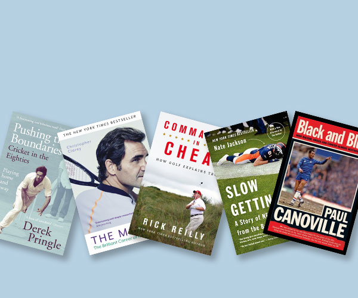

FIVE must read sports
books from the past year
April 2023
1 / Pushing the Boundaries
Derek Pringle (2019)
If you were brought up watching
cricket in the 1980s, then you'll
love this book. It's a story of one
of English cricket's most chaotic
periods told by someone who was
there. Derek is a great storyteller.
He played with some
remarkable
characters. The tales of playing in
the Country
Championship were
very funny. Read it now!!
2 / The Master
Christopher Clarey (2022)
The definitive biography of a
much loved sportsman. It's an
engrossing read of how an
intensely private person survived
20 years as a global icon. It's an
intimate and open account
and
Roger's humility and grace shines
through the pages. He has a great
love for the game and it's a
brilliant read.
3 / Commander in Cheat
Rick Reilly (2020)
A fascinating on-the-ground
and behind-the-scenes survey of
Donald Trump's ethics deficit on
and off the golf course. It
reveals
the absurd ways in which he lies
about his feats,
and what they
can tell us about the way he lives
his life off the course. A hilarious
look at how Trump shamelessly
cheats at golf.

4 / Slow Getting Up
Nate Jackson (2014)
My favourite NFL book. An
unvarnished and uncensored
memoir of everyday life in the
most brutal of sports. A
journeyman pro footballer, this
is far removed from the
glitz
and glamour of the SuperBowl.
Nate offers he offers a
funny,
and shocking look at life in
the NFL.
5 / Black and Blue
Paul Canoville(2008)
What a brutal read. A story is
one of extreme racist bigotry,
shattering career-ending injury,
a
decline into drug abuse, battles
against cancer, family tragedy
and a determination to beat the
odds. His own supporters even
abused him. It's a shocking read,
far removed from the modern
day
sanitised image of the PL today.